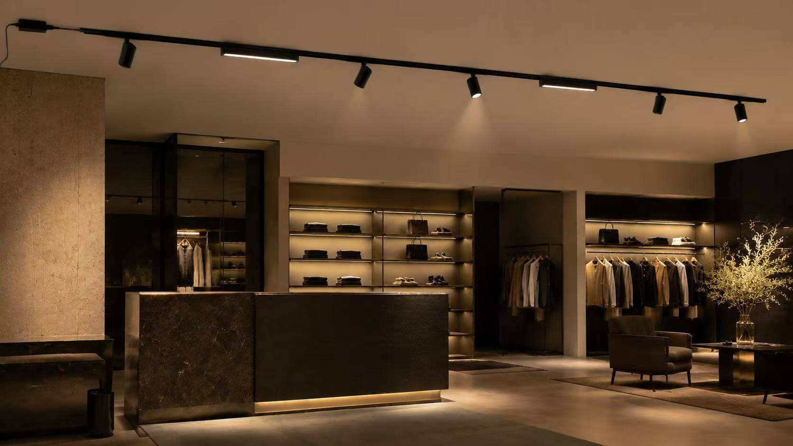
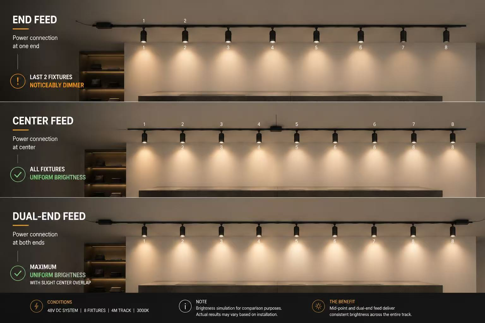

How Many Lights Can You Install on a 48V Magnetic Track Without Voltage Drop?

Before installing a 48V magnetic track system, the wrong load or power feed position can cause dim fixtures, unstable lighting, and expensive ceiling rework. This guide explains how to plan fixture wattage, driver capacity, and feed points before installation.
Now you need to either:
(A) Add a second feed — cutting into the ceiling, extra labour, re-inspection.
(B) Replace the driver — which may not fix the issue if the voltage drop is in the track conductor, not the power supply.
(C) Explain to your client that the system was "designed for this effect."
None of these are good. Option A costs you time and reputation. And the fix was a 5-minute calculation at the quoting stage — before the ceiling was closed. This is why understanding 48V track power planning is one of the most valuable skills a contractor or specifier can develop.
Quick Answer
As a practical guideline, many 48V magnetic track runs are planned around 120–150W per feed point, depending on track length, conductor quality, fixture wattage, and driver capacity.
Under 3m, under 100W → End feed works fine. Simple installation, no special planning needed.
3–5m, 100–150W → Use mid-point feed. Same track, same fixtures, but power connects at the center — halves the distance voltage needs to travel.
Over 5m or over 150W → Plan for dual-end feed or separate power zones. This is standard for commercial track lighting layouts with long ceiling runs.
Why Voltage Drop Happens — and Why It Matters
Imagine a garden hose with several spray nozzles along its length. Turn on only the first — water comes out strong. Turn on all of them — the last one trickles. The pressure dropped as it traveled past each nozzle.
48V track works the same way. Each fixture draws a small amount of power from the same conductor inside the track. The longer the run and the more fixtures you add, the less voltage reaches the far end — this is 48V track voltage drop in simple terms. The lights still turn on, but the last ones are dimmer, the colour shifts warmer, and if you have dimmers, you may get flicker. And by the time anyone notices, the ceiling is already closed. That is why magnetic track power planning matters before installation, not after.
Three Things That Determine Your Load
1. Total Fixture Wattage
Add up every fixture on one track run — this is the starting point for any track lighting load calculation. A 10W spotlight + 15W flood + 12W grille = 37W — no problem. The trouble starts when someone plans 15 fixtures at 15W each (225W) on a single feed. On a standard end feed, the last LED fixtures per track will be dim regardless of the driver size.
2. Where the Power Enters (This Is the Biggest Lever)
The 48V track power feed position determines how far voltage has to travel. Move the feed point and you change everything.
- End feed — power at one end. Simple, but voltage drops across the full length. Fine under 3m.
- Mid-point feed — power at the centre. Voltage drops in both directions, doubling your usable load. Costs almost nothing to add during installation, but 3–5× more if added after the ceiling is closed.
- Dual-end feed — power at both ends. Best for runs over 4m.
- Zone separation — multiple feeds on the same track, each powering its own section. Standard for large commercial layouts.

3. Driver Headroom
A 120W load needs a 150W driver — not a 120W one. Drivers run best at 80–85% of rated capacity. A maxed-out driver runs hot, ages faster, and may trip during startup. Getting the magnetic track driver sizing right from the start saves you a replacement later.
Quick Reference — Real Configurations
| Setup | Feed Type | Result |
|---|---|---|
| 2m track, 6×10W fixtures | End feed | ✅ Perfect — no voltage drop issue |
| 3m track, 8×12W fixtures (96W) | Mid-point feed | ✅ Even across all fixtures |
| 4m track, 10×12W fixtures (120W) | Mid-point or dual-end | ✅ Both work — dual-end gives more headroom |
| 5m track, 12×12W fixtures (144W) | End feed only | ❌ Last 3–4 fixtures will be visibly dim |
| 5m track, 12×12W fixtures (144W) | Dual-end feed | ✅ Even distribution, full brightness |
How to Explain This to Your Customer
"Think of it like a garden hose — the water pressure at the end depends on how many nozzles are open and how long the hose is. Same with a magnetic track. The voltage enters at one point, and as it passes each fixture, a tiny bit is used. Plan the feed position before installation, and every light will look identical."
What to Send Your Supplier
A supplier who asks for these 4 things before quoting is someone who has dealt with rework before:
- Track length per run
- Fixture types + wattages on each run
- Ceiling type — decides whether mid-point feed junction boxes are possible
- Dimmers or smart controls — DALI, 0-10V and Triac all need different driver matching
FAQ: 48V Track Load Planning
Not sure if your layout needs mid-point or dual-end feed?
Send us your run lengths, fixture list and ceiling type. We will check the load and recommend the right feed positions and magnetic track driver sizing — before you install, not after.
Get Load Check →